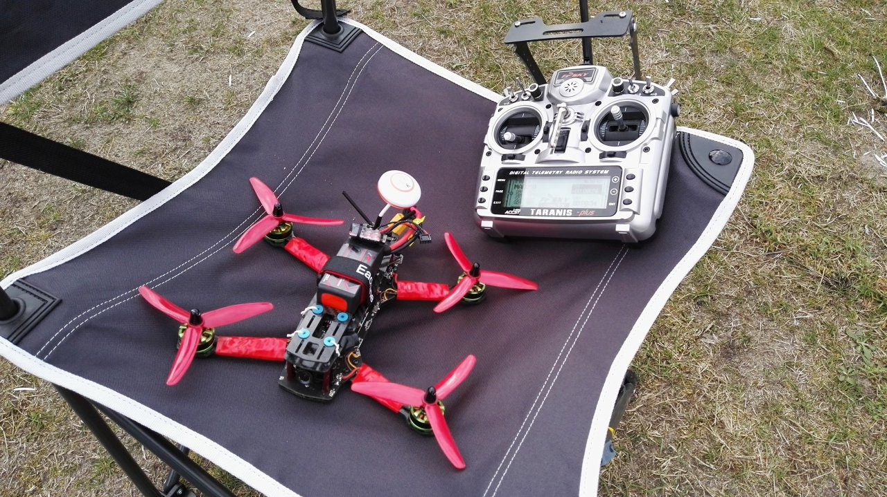

Dron dla programisty
Bo hobby trzeba jakieś mieć
Co to jest dron?


Dlaczego drony?
- Ciekawe
- Uczące
- Wciągające
- A gdyby połączyć przyjemne z pożytecznym... pojawiają się pieniądze, rynek rośnie i pragnie nowości...
A gdzie tu programista?
Algorytm modelarza
10 BULD
20 FLY
30 CRASH
40 GOTO 10
Ile komputerów jest na zdjęciu?
10
- Kontroler lotu
- Obiornik radia
- Moduł nadawczy radia
- Radio
- 4 kontrolery silników
- Sterownik oświetlenia
- SD card data logger
Z czego, jako OpenSource
- Kontroler lotu
- Radio
- 4 kontrolery silników
- Sterownik oświetlenia
- SD card data logger
- Kontroler lotu
- Radio
- 4 kontrolery silników
- Sterownik oświetlenia
- SD card data logger
Dodajmy do tego akcesoria
- Stacje bazowe
- Sprzęt
- Laptopy/PCty
- Urządzenia mobilne
- Konfiguratory
- Wszelkie narzędzia dodatkowe
- Co tam jeszcze ktoś wymyśli
Programiści do dronów
Drony stoją software. Jest sporo pilotów, jest sporo programistów. Brakuje programistów pilotów!
W czym programujemy?
- Najczęściej w C
- Sporo jest w JS
- Java też się znajdzie
Na czym się koncetrować?
- Funkcje wyższe lotu
- Orientacja w przestrzeni
- "Inteligencja"
- Konfiguratory i akcesoria
- Szeroko pojęta przyjazność dla użytkownika